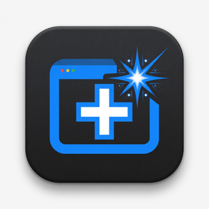

Open source · Edge · Attested builds

Replace Microsoft Edge's MSN-stuffed new tab with Claude, Gemini, ChatGPT, Grok, or any URL you choose.
Are you tired of opening a new tab in Edge and landing on a feed you didn't ask for: news, ads, and clutter? All you want to do is go somewhere you find useful, but Microsoft removed the ability to set your new-tab landing page in Windows 11. This extension gives you that control back. Often that's an AI assistant. Perhaps you want the same URL as your default homepage. Maybe you want nothing, just a blank tab. Your computer, your choice.
The store is full of "new tab" extensions. Some work. Many feel like black boxes: oversized permissions, opaque updates, and no way to know if the bits you install match anything you can audit. Popularity is not a security guarantee. I wanted something small enough to reason about and honest enough to inspect.
Trust isn't "everyone uses it." Trust is knowing what the software does, what it can access, and how the package you install was produced. Transparency is the foundation. Downloads and stars are optional after that.
That is the bar I set for AI New Tab:
storage for your preferences. No host access, no
content scripts on every site, and no browsing-history access.
Claude, Gemini, ChatGPT, or Grok, one click from the toolbar.
Any https:// site, or http:// for a local
network or IoT device.
Want a blank new tab? Clear and save. No forced destination.
Change the destination anytime. Unsaved settings ask you to save, discard, or keep editing.
While the Edge Add-ons listing is in review, or if you prefer to load the package straight from the source of truth:
ai-new-tab.zip from the
latest GitHub Release.
edge://extensions, turn on Developer mode, then
choose Load unpacked (unzip the package first).